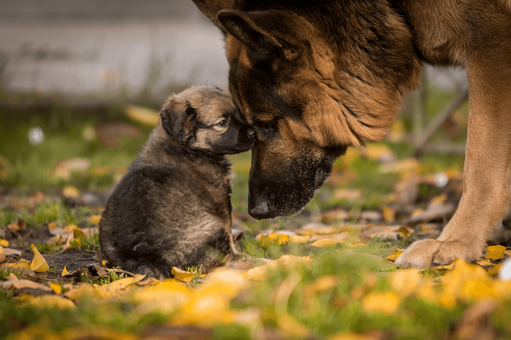

Малко кученце или пораснало куче да взема?

Плюсове при вземане на кученце
- Възможност за ранно обучение:
- Персонализирано обучение: Кученцата са като чисти бели дъски. Можете да започнете да ги обучавате от първия ден, за да съответстват на Вашите предпочитания за поведение, домашни правила и рутинни действия. Кученцата са по-възприемчиви за обучение през първите седмици и месеци от техния живот.
- Създаване на силна връзка: Отглеждането на кученце от ранна възраст помага за създаването на дълбока емоционална връзка. Това може да доведе до много лоялно и добре адаптирано възрастно куче, което е в хармония с Вашия начин на живот.
- ССоциализация:
- Контролирана социализация: Можете да социализирате кученцето си отрано с други домашни любимци, хора и среди, което му помага да се развие в уверено и дружелюбно възрастно куче.
- Излагане на стимули: Кученцата по природа са любопитни, затова излагането им на различни звуци, гледки и преживявания от ранна възраст може да помогне за предотвратяване на страхове или поведенчески проблеми по-късно.
- Младост и игривост:
- Енергия и забавление: Кученцата носят положителна енергия в дома Ви. Техните лудории могат да Ви донесат щастие и забавление.
- По-дълго време заедно: Вземането на кученце означава, че още от неговите първи месеци живот ще сте заедно.
- Адаптивност:
- Приспособимост към дома: Кученцата лесно могат да се приспособят към рутините, правилата и другите домашни любимци във Вашия дом, тъй като учат всичко от самото начало.
Минуси при вземане на кученце
- Интензивно обучение:
- Обучение за тоалет: Изисква се време, за да се научат кученцата къде и кога да ходят до тоалетна. В началото уринират и дефекират на грешни места, което може да бъде дразнещо за новите собственици.
- Поведенческо обучение: Кученцата често хапят, дъвчат и проявяват пакостливо поведение (напр. дъвчене на обувки или мебели) поради растеж на зъбите и любопитство. За да се отучи от това, се изиква време и търпение.
- Голяма енергия и нужда от внимание:
- Постоянен надзор: Кученцата изискват почти постоянно внимание. Не могат да бъдат оставяни сами за дълги периоди, което може да е предизвикателство, ако имате натоварен график.
- Прекомерна енергия: Докато са забавни, кученцата имат безгранична енергия. Това изисква множество ежедневни игри и упражнения, за да се предотврати скуката, която може да доведе до разрушително поведение.
- Рискове за здравето и ваксинации:
- Чести посещения при ветеринар: Кученцата се нуждаят от серия ваксинации, обезпаразитяване и редовни ветеринарни прегледи през първите няколко месеца. Това може да е натоварващо и скъпо.
- Проблеми със зъбите: По време на периода на растеж на зъбите, кученцата дъвчат всичко, което намерят - от играчки до мебели и лични вещи.
- Непредсказуема личност:
- Неизвестен темперамент: Макар че можете да обучите и социализирате кученце, личността му като възрастно куче може да бъде донякъде непредсказуема. Срамежливо кученце може да стане по-уверено, или спокойно кученце може да порасне като по-енергичен възрастен.
- Унищожение на лични вещи:
- Фаза на дъвчене: Кученцата са известни с дъвченето на домашни вещи, мебели, обувки и лични принадлежности, докато изследват и им растат зъби.
Плюсове при вземане на възрастно куче
- Изградена личност:
- Каквото виждате, това получавате: Възрастните кучета имат развита личност, така че можете по-лесно да предвидите тяхното поведение, енергийно ниво и темперамент. Това улеснява намирането на куче, което да отговаря на Вашия начин на живот.
- По-предсказуем размер: При възрастните кучета знаете техния окончателен размер, за разлика от кученцата, при които размерът и растежът може да са непредсказуеми (особено при смесени породи).
- По-лесно и бързо обучение:
- Основно обучение: Много възрастни кучета вече са научени да се облекчават навън и знаят основни команди. Това значително намалява времето за обучение.
- По-малко наблюдение: Възрастните кучета обикновено имат повече самоконтрол от кученцата. Те са по-малко склонни да участват в разрушително поведение като дъвчене или разкъсване на вещи.
- По-ниски нива на енергия:
- Спокоен темперамент: Докато възрастните кучета все още се нуждаят от редовни упражнения и умствена стимулация, те обикновено са по-малко хиперактивни и взискателни от кученцата. Това може да е голямо предимство, ако предпочитате по-тиха и спокойна домашна среда.
- По-малки нужди от упражнения: В зависимост от породата и конкретното куче, възрастните кучета може да имат по-малки нужди от упражнения в сравнение с кученцата, което е полезно за заети или по-малко активни собственици.
- По-малко неизвестности за здравето:
- Известна здравна история: При осиновяване на възрастно куче често имате по-ясна представа за неговото здравословно състояние, включително евентуални съществуващи здравословни проблеми или предразположения, което помага при бъдещото планиране и грижа.
- Незабавно приятелство:
- Готово за обич: Възрастните кучета обикновено се адаптират бързо към новите си домове. Няма дълъг период на обучение или чакане, преди да станат пълноправна част от семейството.
Минуси при вземане на възрастно куче
- Възможни поведенчески проблеми:
- Минала травма: Някои възрастни кучета, особено тези от приюти или спасителни организации, може да са преживели насилие, лошо отглеждане или лоша социализация, което води до тревожност, страх или агресия. Рехабилитацията може да изисква време и търпение.
- Лоши навици: Възрастните кучета може да имат вкоренени поведения, които са по-трудни за коригиране в сравнение с кученце. Това може да включва дърпане на каишката, тревожност при раздяла или лай.
- Здравословни проблеми:
- Проблеми свързани с възрастта: Възрастните кучета може да имат предишни здравословни проблеми или да са предразположени към състояния, свързани с възрастта (напр. артрит или проблеми със зрението).
- Кратък живот: Възрастните кучета обикновено имат по-кратко време за живот в сравнение с кученцата. Това може да бъде трудна емоционална инвестиция, ако се страхувате от загуба в близко бъдеще.
- Специфични нужди за адаптиране:
- Адаптиране към нов дом: Докато повечето възрастни кучета се адаптират сравнително бързо, някои може да имат трудности с промяната на средата. Може да се нуждаят от допълнително време и внимание, за да се приспособят към новия дом.
- Приспособяване към други животни или деца: Ако кучето не е било свикнало с деца или други домашни любимци, може да има нужда от повече време и подкрепа, за да се адаптира към новия си социален кръг.